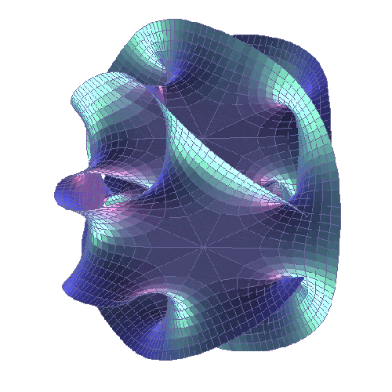
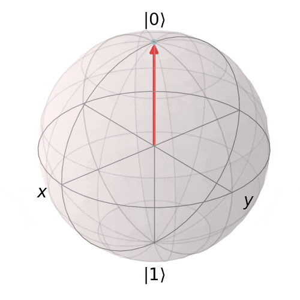
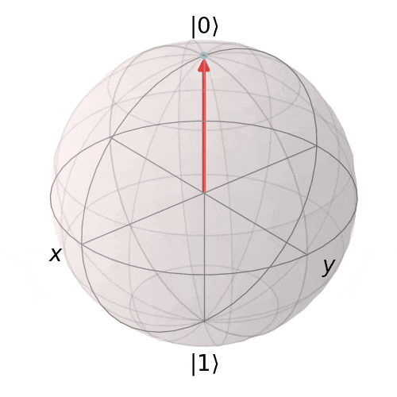
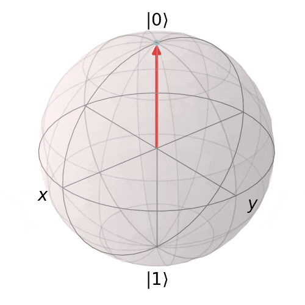

Name：贾治安 in simplified Chinese; given name
: Zhian 治安, surname: Jia 贾; Zhian Jia or Zhi-An Jia in Mandarin Chinese; name used before: Zhih-Ahn Jia. [pronunciation of my name: ]
My primary research focus is in mathematical and theoretical physics.
I am particularly interested in topological field theory, topological order,
quantum field theory, topological quantum computation, quantum information theory,
quantum computation theory, quantum algebras (especially tensor ceteory, Hopf algbras and related topics),
and the operator algebraic approach to QFT. For more details, please see my Research page.
In addition to my work in mathematics and physics,
I enjoy reading books—two of my favorites are "One Hundred Years of Solitude" and "On the Road"—as well as traveling and writing. Check this link for my 2024 reading list (In Chinese).
I am also active on several platforms where I engage in popular science communication.
I enjoy discussing interesting topics with people, so feel free to reach out to me via email.
However, please note that currently, I do not have any openings for supervising students for research. Emails of this nature will not receive a response at this time.


Valuable Resources
TQFT: This page will collect some useful information about TQFT, topological order, topological quantum computation, etc.
TQFT ArXiv Daily: This page will be updated automatically every eight hours using arXiv API and Github Actions (modified from This Project). I'm trying to list different topics about TQFT separately, a list of keywords will be given later. I also strongly recommend that you check out Delcamp's ArXiv Digest for TQFT, which is another great resource for staying up-to-date with the latest research in this field.
2024/07/25 | The preprint titled "The spatiotemporal doubled density operator: a unified framework for analyzing spatial and temporal quantum processes " is now accepted for publication on Advanced Quantum Technologies, [arXiv:2305.15649], a collaborative work with Dagomir Kaszlikowski.
2024/07/17 | Our paper titled "Antilinear superoperator, quantum geometric invariance, and antilinear symmetry for higher-dimensional quantum systems" is now accepted for publication on Quantum Information Processing,
collaborative work with Lu Wei, Dagomir Kaszlikowski and Sheng Tan, [arXiv: 2202.10989].
2024/06/18 | The paper titled "Weak Hopf symmetry and tube algebra of the generalized multifusion string-net model" is now accepted for publication on Journal of High Energy Physics,
collaborative work with Dagomir Kaszlikowski and Sheng Tan, [arXiv: 2403.04446].
2023/12/08 | The preprint titled "Quantum space-time marginal problem: global causal structure from local causal information
" is now accepted for publication on New Journal of physics, collaborative work with Minjeong Song, and Dagomir Kaszlikowski.
2023/07/21 | The paper titled "Boundary and domain wall theories of 2d generalized quantum double model" is now published online:
JHEP07(2023)160,
collaborative work with Dagomir Kaszlikowski, and Sheng Tan.
2023/06/12 | The preprint titled "Unification of spatiotemporal quantum formalisms: mapping between process and pseudo-density matrices via multiple-time states" is now accessible online: [arXiv:2306.05958], a collaborative work with Xiangjing Liu, Yixian Qiu, Fei Li, Oscar Dahlsten.
2023/05/26 | The preprint titled "The spatiotemporal doubled density operator: a unified framework for analyzing spatial and temporal quantum processes
" is now accessible online: [arXiv:2305.15649], a collaborative work with Dagomir Kaszlikowski.
2023/03/24 | The preprint "Quantum space-time marginal problem: global causal structure from local causal information
" is now available online: [arXiv:2303.12819], collaborative work with Minjeong Song, and Dagomir Kaszlikowski.
2022/08/16 | "Quantum simulation of indefinite causal order induced quantum refrigeration" is now published online: Phys. Rev. Research 4, L032029(2022), collaborative work with Huan Cao et al.
2022/07/11 | "Boundary and domain wall theories of 2d generalized quantum double model" is now available on arxiv: [arXiv:2207.03970]
2022/02/22 | “Antilinear superoperator and quantum geometric invariance for higher-dimensional quantum systems” is now available on arXiv: [arXiv:2202.10989].
2022/01/28 | “Electric-magnetic duality of Z2 symmetry enriched cyclic Abelian lattice gauge theory” is now available on arXiv: [arXiv:2201.12361].

 
